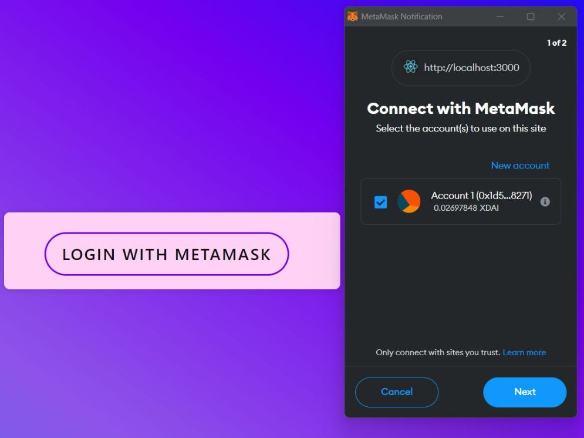

Truth Social App
- Tech: Gnosis Chain, Python, React, Flask, Pinecone, IPFS
- Taikai Website: Link
- Github URL: Project Link
What is Truth Social app
Truth Social Dapp is a social media app that works to identify and stop the spread of fraudulent content, including photos, posts, and accounts. The program uses machine learning to spot fake images and text, and blockchain smart contracts to protect legitimate material. Truth Social Dapp's major objective is to provide a trustworthy platform where users can freely distribute and consume information without fear of being scammed. The software uses cutting-edge technology to increase openness and honesty in online conversations. Why We are Using Blockchain This social media application's use of blockchain technology serves multiple essential purposes. It provides a secure and decentralized platform for storing user data, content, and interactions first and foremost. This means that the information shared on the application is not under the control of a single entity or organization and cannot be manipulated or censored by third parties. Moreover, blockchain technology enables the implementation of smart contracts, which are agreements that can be programmed to execute automatically when certain conditions are met. This can aid in the enforcement of platform rules and regulations, such as those concerning content moderation, data privacy, and user safety. Moreover, the use of blockchain technology can enhance social media interactions' transparency and accountability. It can, for instance, allow users to verify the authenticity of content and user identities, as well as monitor the origin and proprietorship of shared content. This social media application's incorporation of blockchain technology contributes to the creation of a more secure, decentralized, and trustworthy platform for users to share and ingest content without the risk of deception, manipulation, or censorship.
